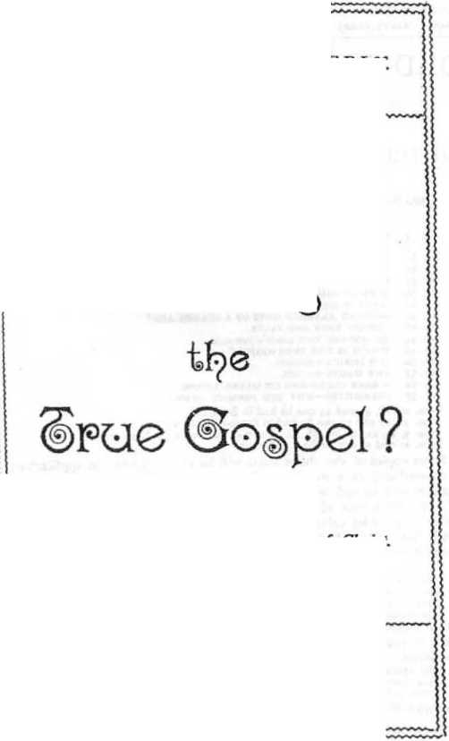

No. 49—Which Is the True Gospel?
Which ii
I am not ashamed of the Gospel of Christ. Rom. 1:16.
WATCH TOWER BIBLE AND TRACT SOCIETY, ALLEGHENY, PA., V- S. A.
1900.
HNTBRRD AS SECOND GLASS MAIL MATTER ATTHB POSTOFFICK, ALLEGHENY, FA-SAMPLE TRACTS FREE I SUBSCRIPTION PRICE, SIX CENTS (3d.} PRX YEAR—48 PAGELS
— FOR THE —•
PROMOTION OF CHRISTIAN KNOWLEDGE.
PUBLISHED BY THE
BIBLE HOUSE, ALLEGHENY, PA., U. S. A.
BRITISH BRANCH, 131 GREEN ST., FOREST GATE, LONDON.
HO. 3. PROTESTANTS, AWAKE I
HO, J. THE WONDERFUL STORY, 32 pp.
NO. la. WHY BVIL WAS PERMITTED.
no. ai. do you know!
MO. 37. HOW REA DEST THOU !
NO. 38. HOPS OF IMMORTALITY.
NO. 40. WHAT IS TH15OUL.!
KO. 41. MUST W1 ABANDON HOPS OF A GOLDEN AGE I
NO. 42. CROSSES TRUK AND FALSE.
NO. 44. GATHERING THR LORD'S JEWELS.
NO. 49. WHICH IS THE THUS GOSPEL?
NO. 52. OUR LORO'S RETURN.
NO. S3- THE WAGES OP SIN.
NO. 54. A DARK CLOUD AND ITS SILVER LINING.
NO. 5^. CALAMITIES—WHY GOD PERMITS THEM.
Nos. 2J, 28, 40 and S3 can be bad Ln Swedish,
Nos. ai, 27 and 53 can be had in Dane-Norwegian.
Nos. x 21* <°> 49 eijd S3 can be had in German,
Nos. ai and at can be had in French-
Extra copies of the above tracts will be supplied free, on application, to subscribers; or a single sample to any one Thus many may be coworkers with us and with Godin scattering the truth—“the hail.”—Isa. 28 ; 17 Hundreds of thousands are being circulated thus, the funds being supplied by voluntary contributions from those whose hearts and heads have been refreshed by these “glad tidings of great joy which shall be unto all people?1
BOOKLETS
THE WONDERFUL STORY, ”lHS OLD, OLD STONY?* Illustrated.—60 pp.
WHAT SAY THE SCRIPTURES ABOUT HELL*—88 pagCS. Also in GcrHlRD.
what say the scriptures about sphutismT—128 pages. Also in German.
tabernacle shadows or bbttkr SACRIFICES. III.—130 pp. Also in German.
Extra Copies of the above booklets are supplied to subscribers at loc ($d.) each, or 50c (*/6) per dozen: those below at 5c (2$d.) each, 25c (//j) per dozen. .
thu bible vs. the bvolution theory. <8 pp. Also in German.
THE PAKOUSIA OF OUR LORD. ?S pp. Also ill Swediih.
bristle to ths HEHREWS Illustrated.—64 pp. In Yiddish, only.
German Wateh Tower & Old Theology Quarterly—Translations.
— QUARTERLY FOR ONE YEAR, 25 CENTS. —
We can supply copies of the first 19 issues ax the rate of *9 copies for 25 cents. Sample copies for free circulation, gratis, postpaid-
A Noteworthy Discourse before the Florida Chatauqua Assembly, De Funiak Springs, on Sunday, March 4th, 1900, reported by the Associated Press.
*'Z am not ashamed of the Gos/el of Christ,"—Rom. s:/6.
NO APOLOGY seems necessary for our subject—"Which is the true Gospel of which theAoostle was not ashamed?'’ If time and thought may be profitably expended in the study of the earthly sciences—sociology, finance, etc., etc., built largely upon human inferences and conjectures—surely none could dispute the propriety of studying the science of divine revelation. If it be profitable to investigate the physical diseases of mankind and their causes, and the laws of medicine and of sanitation for the offset of these, it surely cannot be disputed that the Gospel which God has presented as the antidote for soulsickness and soul-death, and as the science pertaining to life eternal, is worthy of still greater and more profound consideration.
The greatest minds, the noblest specimens of our race, have admitted our topic to be the one above all others in importance; and have weighed it carefully—whether as a result they accepted or rejected it. We are not now discussing the weight of mental acumen enlisted for and against the Gospel: we are merely noting the fact that all men of ability have recognized that the subject is worthy of their careful consideration, and as having claims upon their attention paramount to any and all others. Indeed, it may be set down as a fact that whoever has given the subject of religion no consideration is one of three things,—a novice in mental exercise, or a near relative to “the fool who hath said in his heart there is no God." or a coward, preyed upon by fears, instigated by Satan to hinder honest investigation of the divine message of love and mercy.
Even a hasty glance into the intelligent faces of this large audience assures me that you all have given some thought to our theme;—though experience assures me that comparatively few of you have ever reached conclusions on this subject fully satisfactory to yourselves. Hence your faith and love and zeal toward God and your zeal for the Gospel arc less strong than you could desire. Let us hope that as we reason together on this great subject to-day, we may by God’s grace, see more clearly than ever before which is the true Gospel—the one of which the Apostle was not ashamed, and of which, therefore, none of us need feel ashamed,—the Gospel, therefore, which should more and more move and energize us, as the power of God, unto salvation.
No one of intelligence will dispute the meaning of the word “Gospel”: it signifies “good tidings,” good news,— a good message. Nevertheless, in some unaccountable manner, by common consent, “a real Gospel sermon" is almost universally understood to signify bad tidings—tidings of eternal misery to the great mass of our race—to all except the little flock of God’s faithful people. As a consequence, the preacher of a “Gospel sermon” is expected to figuratively shake the congregation over an abyss of everlasting torture, making as strong an effort as possible to intimidate them thereby to a thorough reformation of life, in hope of thus escaping an awful eternity.
True, this that we might term “the Gospel (?) of damnation” is not so generally preached as it once was, because more enlightened minds of cultured people repudiate it as a fetich of the past. Yet this perversion of the Gospel is still to be heard in country places, at camp meetings, occasionally in the city pulpit, and universally in Salvation Army meetings. Nothing is further from our intention than a criticism of the consciences and honesty of intention of those who thus preach. It is no part of our mission to criticise persons and motives, but “With malice toward none and _ with charity toward all” we consider it not only our privilege but our duty to criticise doctrines, that thereby the truth may be the more firmly established, and error brought into disrepute. _
Before we proceed to the consideration of the Gospel of which the Apostle was not ashamed—the Gospel set forth in the Scriptures—it will be expedient for us to take a glance at the different Gospels set forth by the various denominations of Christendom. It is not our thought thateach demnomination represents a different Gospel, for the differences in many instances are chiefly respecting ceremonies, forms, methods of government, name, etc. and not in respect to the message or Gospel held forth. Nevertheless, there are three distinct lines of faith, or doctrine-three distinct Gospels set forth in Christendom, all recognized as “orthodox," because they all contain as their fundamental, the doctrine of the eternal torment of all mankind, except the comparatively few "saved.'1 Each of these three Gospels have millions of supporters, divided into numerous denominations. These in point of numbers are
(i) The Roman Catholic faith, or Gospel, in which concur the Greek Catholics and Anninian Catholics, and some of the high-church Episcopalians.
(2) The Calvinistic Gospel, which is held by the various Presbyterian denominations, the Congregationalists, Baptists, and many Lutherans and Episcopalians.
(3) The Arminian Gospel, held and chiefly represented by the Methodists of various names and connections, and by the Free-Will Baptists: however, many of other denominations at heart accept the Arminian Gospel, while their church connections identify them with the Calvinistic Gospel. Hence we may say so far as Protestantism is concerned, that the Anninian and the Calvinist Gospels are about equally supported.
It may not be possible for us to handle our subject properly and thoroughly without offering some criticism of these three Gospels which for centuries have entrenched themselves in Christian minds, each fortiGed by the decisions of its own Councils, backed by voluminous opinions from their several theological seminaries, but we can and assuredly will strenuously avoid saying one solitary word in criticism of those who we believe conscientiously uphold these several conflicting Gospels. We call you to witness that we are all Scrip-turaliy enjoined to "Contend earnestly for the faith once delivered to the saints,” (the true Gospel) at the same time that we are enjoined by the same authority to “Speak evil of up man.” We shall endeavor to keep strictly within these admittedly proper lines, and, additionally, as the Apostle admonishes, “Speak the truth in love.”
THE GOSPEL ACCORDING TO ROMAN CATHOLICISM.
The Gospel according to Roman Catholicism is that all men fell into sin and under sentence of eternal torment: that Christ accomplished a redemptive work which, supplemented by the Sacrifice of the mass, and by prayers and penances, permits all believers (Roman Catholics) to escape that eternal torment, which will be the sure portion of all heretics, regardless of their good works or morals. As for its own people, it holds that even its highest officials, including Bishops ana Popes, go to Purgatory lor refinement, purification from sin and to be prepared for heaven. It claims that some will spend only a short time in Purgatory, assisted out of it by the merit of prayers, masses, etc., on their behalf by their friends after death. But their expectation is that ultimately Purgatory will be no more, its thousands of millions being prepared for a better and happier condition. But according to all the great theologians of Papacy, and according to all pie Papal bulls, all Protestants, all rejectors of Papacy’s teachings, will suffer endless torment. This is the Roman Catholic Gospel fairly presented, as we understand it. It does not seems to us to be very good news—not very good tidings, even to those who get the very best it has to offer, and it certainly would be very bad tidings to all out of harmony with Papacy.
Let us next look at the great Protestant doctrine represented in the word Calvinism—the doctrine of the election of the Church and the reprobation of all others.
THE GOSPEL PRESENTED BY CALVINISM.
Calvinism claims that faith in Christ is essential to salvation and it admits that faith comes by hearing and hearing by the Word of God. Calvinism requires more than a mere knowledge of Christ and belief in him as a good and exemplary man, who died a martyr to his too extreme convictions. It requires faith in Christ's death as a sacrifice for man’s sin, and at least some manifestation towards righteousness of life before any could be recognized as being of the elect Church. Consequently, according to Calvinism, the elect Church could not include the heathen of the present time and all the way back through the past, who have never heard of the only name given under heaven or amongst men whereby we must be saved. Stretched to its very broadest, Calvinism could not include more than one in twenty of earth's fifty thousand millions that are estimated to have lived from Adam’s day until the present time. In other words, according to the broadest possible estimate of this view, more than fortyseven thousand millions of humanity were in the language of the Westminster Confession of Faith, “passed by” as nonelect in the divine plan.
And what does this mean —"passed by” or "non-elect?” It means, according to Calvinism, that God, who knew the end from the beginning, before creating this world and mankind upon it, determined that he would "pass by” and not elect those forty-seven thousand millions of his creatures to life and happiness, but would predestinate them to an eternity of torture, and that carrying out this diabolical plan, he prepared a great place large enough to hold forty-seven thousand millions, and fuel sufficient to produce the necessary combos-tion there to all eternity—did all this with a full appreciation of all the awful facts and circumstances of the case
Moreover, we remember the statement of Calvinism which many of us learned in our youth, to the effect that God's favor toward the elect is not because of any worthiness on their part, nor because of any works which they had done, but "of his own sovereign grace” he saves them from all the horrible conditions which he has predestinated shall be upon the others. Now if the salvation of the elect is not because of their works or worthiness, but because of God's sovereign grace only, the simplest mind can see that God might without any violation of principle have extended that sovereign grace to others—to all, since it was not because of worthiness nor because of works, but merely of his own volition that any are saved,—according to Calvinism.
The celebrated Jonathan Edwards, when preaching upon this subject in New England years ago, after picturing the awful torment of the non-elect, was asked the question, Would not the thought of the anguish of the lost mar the bliss of God's people in glory? His answer in substance was, No; you will be so changed that such matters will not affect you; you will look over the battlements of heaven and see in torment your neighbors and friends, yea, yohr own parents and children, brothers and sisters, and turning round will praise God the louder because his justice is made manifest
Now, my dear friends, I do not charge any who are here present with having so false a view of the divine character and plan as this. Indeed, I am glad to note that our Calyinistic friends in general are repudiating this doctrine, realizing that there is in it a serious lack, not only as respects divine love, but also as respects divine justice. I was glad some years ago to note that some of our Presbyterian friends were so moved by higher and nobler conceptions of the Almighty that they wished to rid themselves of any part in so blasphemous a statement respecting his character and his plan. I was sorry, however, that when the matter of "the revision of the Presbyterian standards” was taken up it was found that Only a minority was in favor of revision, and I was still more sorry to note that that minority of intelligent, gqdiy people was willing to continue to confess to such a horrible mis-statement of their true views—willing, shall I say, to continue to “blaspheme that holy name” because a majority of their brethren were unwilling that such blasphemous misrepresentations should be discontinued.
I am glad to believe that if this matter were brought to the intelligent attention of Presbyterians in general, a large majority would be found willing, nay, anxious, to undo the wrong and to make such reparation as would be within their power, by way of honoring the great Jehovah and attesting their appreciation of his love and his justice, as well as of bis wisdom and of his power. This is just the point: Calvinism, in its anxiety to establish the wisdom and power of God. his foreknowledge and his ability to carry out his plan, has conceived of a plan which is far from the correct one, lacking both in justice and in love.
It may be argued that Love is a grace and that its exercise is not incumbent upon Jehovah; that all that could be asked or expected of him would be simple Justice, and some might be ready to claim that for God to eternally torment these forty-seven thousand millions “passed by” would be in strict accord with Justice. This we denyl We claim that having the power to create mankind would not justify their creation if the Creator saw that the result would be the everlasting torture of a single creature. Justice would say that power is not to be exercised to the injury of another, and that to exercise the creative power under such foreknown conditions would be injustice. And Wisdom attuned to Justice would say, Better a thousand times never to have created anybody than to have created one being to suffer unjustly eternally.
This statement, dear friends, is a fair impartial statement of the Gospel according to our beloved brother, John Calvin, and those who subscribe to the Westminster Confession, and their allies. This surely is not the Gospel of which the Apostle Paul, in our text, declared, “I am not ashamed of the Gospel of Christ." Paul would assuredly have been ashamed of such a Gospel, and so are al! true Christians, who have the true spirit of love and j ustice, - none more so, perhaps, than those who unfortunately, through circumstances of birth, etc,, and hitherto without realizing what it meant, have been lending their names and Influence to this great blasphemy against the divine character.
THE XRMINIAN VIEW OF THE GOSPEL.
Let us now examine the Arminian view. This view is growingly popular. Its message or Gospel is, God is love— he loves you; he loves everybody; he is doing all that he can to save everybody; if you are lost it will not be God's fault, but your own. On the surface, at least, this theory seems much more loving and much more just than the one already examined, but before we go far we will also find it very defective. very far from being either a reasonable or a Scriptural gospel. We will find it inconsistent with its own statement-illogical.
For instance, while it sounds nice theoretically to say that God is doing all that he can do to save the whole world at the present time, everybody knows that this is not true; that on the contrary you or I or any other intelligent human being if possessed of the one-thousandth part of the divine power and wisdom could speedily accomplish the evangelization of the whole world. Nor will it do to say that God has committed himself to a certain mode of procedure through his Church, and that if the Church fails to contribute with sufficient liberality both money and evangelists the heathen will not hear of “the only name given under heaven or amongst men whereby we must be saved," but will go to eternal torment, etc. Neither will it do to say that God is doing all that he can do and is hampered by the lack of interest in the Church; because his wisdom and foreknowledge foresaw all these conditions as they are, and he could not justly be excused from the real responsibility of the matter, since he is the Creator, and in him is vested the all-power as well as the all-wisdom. Such a claim as this would be tantamount to saying that God has erred in wisdom when he thought to leave the conversion of the world to the Church, seeing that the Church has not accomplished this. Such a claim would be merely excusing God from doing all that he can do, instead of showing that he is doing all that he can do.
But let us look more critically into this matter. If this view we are criticising is correct, if God is doing all that he can do to save the world, and if he has been doing this during all the past ages, then without question the world’s conversion is a hopeless thing, and we can never expect to see better results than at present. This theory presupposes a raco or battle between the Almighty and Satan, each seeking to capture the humar family, and to the discredit of the theory it shows Satan the victor thus far. Starting out with one pair, both on the Lord’s side, the first 1656 years ended with a flood in which the whole world of mankind was blotted out because of wickedness, and only eight persons reckoned sufficiently righteous to be preserved. Starting again with those eight persons counted sufficiently righteous for preservation, we find that there are in the world to-day sixteen hundred millions, and that out of that whole number there are about one hundred millions nominal Roman Catholics and one hundred millions nominal Protestants, and a very much Smaller number of true “saints of God."
What would be the lesson from this if the Arminian theory be correct, that God is doing all that he can do to save the world? The lesson would be that with all his good intentions of love and mercy our God is thoroughly incapable of the work he undertook to do. And if these arc the results in six thousand years, what could we hope for in the future? How many hundreds of millions of years would it be before the whole world would be converted? We answer that according to statistics'it would never be, for statistics show that the natural increase of population throughout the world is far, far beyond the proportion of even nominal conversions from heathendom. Indeed, according to some good reckonings, the percentage of Christians every year is decreasing, the births of heathen lands so far outnumbering the births of Christian lands—even counting all the children born in Christendom as Christians.
Is any Christian, in view of these facts, prepared to claim that our God has been doing all that he could do for the conversion of the world? If so, that Christian may as well write upon his hopes at once the word “Ichabod.” If we saw that the Calvinistic view magnifies the wisdom and power of God at the expense of his justice and love, we find on the other hand that the Arrninian view magnifies the love of God at the expense of his wisdom and power. The true Gospel must show divine Wisdom and Power in full accord with divine Justice and Love: of any other we must needs be ashamed.
DISTINCTIONS WITHOUT PRACTICAL DIFFERENCE.
But, my dear friends, we may as well now as at any time concede that there is comparatively little difference in the outcome of these two popular Protestant Gospels—the difference is merely a theoretical one respecting how the results are to be reached. The results themselves are the same in both cases—the eternal doom and torment of over forty-seyen thousand millions of human creatures. For our Ar-tninian friends no less than Calvinists agree that there is no salvation aside from faith in Christ, the only name given; and they admit also that of those who believe in Christ only the sanctified are of the real Church; and their Gospel is also that only the real Church is to be saved and that all others are to be eternally and most horribly tormented;— some claim in literal flames, others say by the torments and gnawings of conscience and remorse, which they proceed to say will be worse than the literal flames,—and we respond, if worse, so much worse for the argument.
All will surely agree as respects these two theories or Gospels held out to the world by Protestant Christendom that it would make no difference to the forty-seven thousand millions, whether they got into that awful state of hopeless woe by divine predestination and lack of love and justice, or by divine incapacity and lack of foreknowledge and proper arrangements. We believe that no true Christian will be ready after examining the subject thus far to say that he fully approves either of these theories, and that he is not ashamed of both of them.
CONSIDER. NOW THE TRUE GOSPEL,
Let us now proceed to examine what is the true Gospel, presented to us in the Word of God—the Gospel of which the Apostle was not ashamed.
The word "gospel" itself should be the clue —should save the intelligent Christian from being misled by the various theories of bad tidings of great misery for nearly all people, miscalled "gospel," He thinking it good news that one out of a thousand of the human family is to be saved and the remaining 999 to be eternally tormented, is either not a Christian at all, or he is decidedly undeveloped in Christian character, in mercy, in love, in justice. In our opinion he is at most only a "babe in Christ" who lias need first of the milk of the Word and subsequently of the “strong meat” thereof, that he may grow up into Christ in all things, and be able to comprehend with all saints the lengths and breadths and heights and depths of the love of God which passeth all understanding,—Eph. 3:18, 19.
When occasionally we come across some one who gives evidence of being a Christian, and who still entertains such horribly blasphemous views respecting the Heavenly Father's character,wo feel like quoting to him the Lord's words through the Prophet, “My ways are not as your ways, nor my thoughts as your thoughts, for as the heavens are higher than the earth so are my ways higher than your ways and my plans higher than your plans." (Isa. 55:8,9) And part of our object in this discourse, dear friends, is to have those whose eyes are anointed of the Lord, that they may see spiritual things, discern some of the Lord's higher ways and higher plans which he presents to us in his Word under the name “gospel” — good tidings.
NOT UNIVERSAL SALVATION BUT A UNIVERSAL OPPORTUNITY
EOR SALVATION.
The Apostle tells us that God preached the Gospel beforehand to Abraham, “beforehand" signifying before it was due to begin; for the Gospel did not begin with Abraham, but with our Lord Jesus Christ, as the Apostle again declares, “This salvation began to be declared by our Lord and was confirmed unto us by them that heard him." (Heb. 2:3.) Ail that ever went before our Lord’s preaching was not the Gospel, but merely types and promises which foreshadowed it. Let us notice next what, according to the Apostle, constituted this forestatement of the Gospel to Abraham; he says that it was couched in the words, "In thee and in thy Seed shall all nations be blessed." (Gal. 3:16, 29). Note this carefully: it does not say, In thy seed shall one out of a thousand out of the families of the earth be blessed, and the remainder be doomed to an indescribably horrible eternity, but that the whole Gospel is a Gospel of blessing, applicable to all the families of the earth—through Christ, the true seed of Abraham.
When our Lord Jesus was born into the world, the heavenly Father sent a message respecting him, and the angels who bore that message declared that it was a Gospel message. Let us hearken to what the angels said about the eternal torment of the vast majority of our race. They said to the shepherds, “Behold we bring you good tidings [gospel] of great joy. which shall be unto all people." (Luke 2:10.) Let it be distinctly noted that the Gospel of the angels, like the Gospel communicated to Abraham, contains no reference to the damnation and eternal misery of any of the Lord's creatures, and that consequently our friends of the Salvation Army and others, who in ignorance preach damnation and call it the Gospel, are doing so in utter violation of the meaning of the word and of all the uses of that word throughout the Scriptures. However well they may mean, they arc in this certainly committing a wrong, a grievious wrong, and we long to sec the light of the knowledge of the goodness of God shine into their hearts and relieve them of this blindness which comes not from God nor from his Word, but from the prince of darkness.—a Cor. 4:4.
It will require all of the Millennial age (which is to follow this Gospel age in which we live) to bless all the families of the earth with the joyful knowledge of divine grace in Christ. Just so surely as the forty-seven thousand millions went down into death without hearing of the Saviour, without coming to a clear knowledge of the truth, without the good tidings of great joy reaching their ears,—just so surely must they all come forth from the grave that this very Gospel message of “good tidings" may be declared to them, and that they may be tested thereby and either be accepted to eternal life or destroyed as unworthy of life, in the Second Death. We sav just so surely, for three reasons:
(l) The announcement of the Gospel to Abraham says. “In thy seed shall all the families of the earth be blessed." and all of these forty-seven thousand millions belong to this very class specified, the families of the earth—and they have not vet been blessed with this knowledge of the only name wherein is the blessing.
(2) The same is true of the message by the angels, — the good tidings of great joy is for all people, and these forty-seven thousand millions of humanity are surely the great bulk of all people.
(3) We are sure that this testimony must be given to them in the future because the Scriptural declaration is that “Christ died for the ungodly“be tasted death for everv man,” and as a consequence every man must have an opportunity granted him for benefitting by that death, and of availing himself of the privilege of eternal life which was secured by our Lord’s ransom sacrifice.
DID CHRIST DIE FOR THE CHURCH ONLY?
But some one would perhaps say, Christ died only for the sins of the Church and not for the sins of the world, and consequently the sins of the world cannot be forgiven them. We answer, No; the Scriptural declaration most positively is that “Jesus Christ by the grace of God tasted death for every man,” "to be testified in due time." And, additionally, the Apostle says, “He is a propitiation [satisfaction] for our [the Church’s] sins, and not for ours only, but also for the sins of the whole world." (I John 2:2.)
What could be plainer than this? If the price for the sins of the whole world has been paid to Justice, we may rest well assured that Justice will furnish opportunity through the Redeemer whereby all these whose sins were atoned for may come to a knowledge of Christ and to an opportunity of accepting divine grace through him.
But some one will say, "Why should God adopt a plan which would necessitate a resurrection of the dead, and a postresurrection trial for eternal life except for all the elect Church of this Gospel age?
We answer,—(1) It is not for us to inquire why the Lord adopts certain plans which differ from those which our poor finite minds might arrange for him; rather it is for us to acknowledge that our wisdom is insufficient on such a subject and that we should come humbly to' the Lord to hear from his Word whatever he may be pleased to inform us respecting his purposes. (2) As a matter of fact only those who approach the question from this standpoint need expect to see the truth or to “comprehend with all saints the lengths and breadths and heights and depths of the love of God.”— Eph. 3:18; 1 Cor. 2-.I2.
God has been pleased, however, to reveal to us some of his reasons for arranging his plan as we see it. He assures us of his full wisdom and power to manage every feature of his own work according to his own good pleasure, assuring us that he knows the end from the beginning, and that the end will fully justify every step he has taken. His Word, no less than observation, shows us that during all these six thousand years the. world has been getting a lesson respecting the exceeding sinfulness of sin and its wages of sorrow and death. His Word assures us also that during the next age, the Millennium, the whole world will be brought to a knowledge of the way of righteousness and love and peace, and will see the divine law in practical operation, and witness its beneficent results in all those who will then come into harmony with the great Mediator.
Thus mankind learns the lesson of evil and its consequence first in the present life, and the lesson of righteousness and its blessed results under divine providence, in the Millennium ; and when thus fully equipped with knowledge on both sides of the question and instructed by the Royal Priesthood, (the completed and glorified elect Gospel Church), mankind will be ready for the tests, that will be applied by the Lord Jesus, tinder which the obedient and faithful will be granted full perfection and eternal life, and the disobedient and incorrigible will “be destroyed from amongst the people.”— Acts 3:23.
"if ye be christ's, then are ye abraham’s
SEED, AND HEIRS.
Another matter, really the key to the whole question which we are discussing, is revealed in God’s Word, viz., that in the divine purpose the promised “Seed of Abraham” that should perform the great work of blessing all the families of the earth, is to be one, in the sense of one kind, but not in the sense of one person—that is to say that the seed of Abraham consists of Jesus Christ the Head, and of the Church which is his body. Not the nominal or professing church, but the true Church, “whose names are written in heaven,” and who walk in the footsteps of their Lord, and are found faithful unto death, and shall be granted with their Lord the crown of life.
This Gospel age intervening between the time of the great Sin offering and the time when the blessing of earth's billions will commence, God has set apart for the work of selecting or electing the body of Christ, the Church, the Bride, the “little flock.” the “royal priesthood." the joint heirs with Christ in his kingdom. These, like their Head, are called with a "high calling." a “heavenly calling", and the salvation provided for them is higher than that which God purposes for the world in general. He is selecting this "little flock" and trying them and proving them, fitting them and polishing them for the heavenly Kingdom, and it is to these, as the Apostle Peter declares, God has given “exceeding great and precious promises [far beyond any promises given to any other of his creatures] that by these [promises] we might become partakers of the divine nature," and joint-heirs with his Son. This is denominated a “heavenly calling" in contrast with the earthly salvation intended for whosoever will, “in due time." .
This true view of the calling and election of the Church is another feature of the Gospel. If it is splendid, good news to know that ultimately all families of the earth are to be blessed with opportunities for salvation through the Christ it is still an additional feature to the good news to know that God has invited us to become members of the Christ company, ‘'members in particular of the body of Christ." No wonder the Apostle calls this "our high calling," our "heavenly calling" : it is to the attainment of this great prize that the Apostle exhorts all the faithful to lay aside every weight and every besctment and to run with patience the race set before us in the Gospel, looking unto Jesus, the author, until he shall have become the finisher of our faith.
This is the true Gospel, dear friends, the one we find set forth in the Scriptures, set forth by Paul himself, and of which he was not ashamed. This Gospel shows the character of our Creator in a most wonderful light,—his Wisdom, able to discern the end from the beginning; his Power, able to accomplish that which he pleases; his Justice, squaring every feature of the plan from first to last, according to the most absolute features of righteousness; his Love, whose lengths and breadths and heights and depths we have not yet been able to explore; a love which sympathizes with his creatures in their fallen estate; a love which provided a Saviour, and a great one; a love which prompted that Saviour to give his life as our ransom price; a love which met all the requirements of divine justice for us; a love which still pursues mankind, and in this Gospel age calls us to joint heirship with his Son in a nature and Kingdom far above angels, principalities and powers, of which the Apostle says:
"Behold what manner of love the Father hath bestowed upon us that we should be called the sons of God." This divine love, still pursuing its original plan for man's salvation, will use the “elect” glorified house of sons, of which Christ Jesus is the Head (Eph. 1 :zz) in blessing all families of the earth with full opportunity of knowledge and full assistance up the highway of holiness (Isa. 35:8) that so many as will may attain to restitution to all that was lost in Adam by coming back into harmony with God through the great Mediator.—Acts 3:19-23.
NONE NEED BE ASHAMED OF THE TRUE GOSPEL,
Verily, dear friends, of this Gospel we are not ashamed, “for it is the power of God unto salvation to every one that believeth." It has in our hearts a transforming and renewing power, a sanctifying power which no error could possibly have, and which all the theories of eternal torment have never equal ed and never will. Let us more and more “show forth the praises of our God, who hath called us out of darkness into his marvelous light,” by renouncing all God-dishonoring creeds and theories, and instead hold forth the Word
of life, and witness the good confession—the “good tidings of great joy which shall be to all people."
All who will declare the true Gospel will need to be well shod with the preparation of the gospel of peace (gentleness, patience, meekness; for strange to say, they will find bitter opposition from professed servants of the Lord who have been blinded and prejudiced by Satan's misrepresentations of the Gospel,—by which he seeks to drive from the Lord all who have a remnant of reason in their religious thinking. All who have ears to hear, and who do hear the true Gospel, will quickly distinguish it from the miserable counterfeits which for so long have passed current among God’s people. Let all such remember that ability to hear is an evidence of divine favor, and let them not be ashamed, but glorify God on this behalf. Let such remember, also, that their acceptance of the truth as due, in the face of unpopularity, is a part of their testing. The Lord puts his plan, his Word, as his representative, saying—He that is ashamed of me and my words, of him will the Son of Man be ashamed, when he cometh in the glory of his Father with his holy angels. —Mark 8:38.
Free Sample Copies of this trail can be had for your friends on application; also further rending matter for yourself, showing the true teaching of the Bible respecting the Church of Christ said the object of her election in this age, and the terms or conditions upon which those called to membership in it may make their “ calling and election sure.”
We also offer free a pamphlet showing the Bible leaching respecting future punishment, which examines every testimony of God's Word on the subject, and proves conclusively that many honest souls are misled by faulty translations and by misinterpretations of some of our Lord's parables, and the symbols of Revelation.
The objetfl of our Society is to spread a knowledge of the truth, believing that thereby our Creator and Redeemer will be more honored, and God’s people greatly blessed and enabled to worship and serve the Lord more fervently—in spirit and in truth. Address us,—
WATCH TOWER BIBLE AND TRACT SOCIETY,
BIBLE HOUSE, ALLEGHENY, PA., U. S. A.
BRITISH BRANCH; 131 GREEN ST,, FOREST GATH, LONDON.